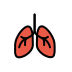
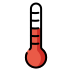
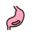
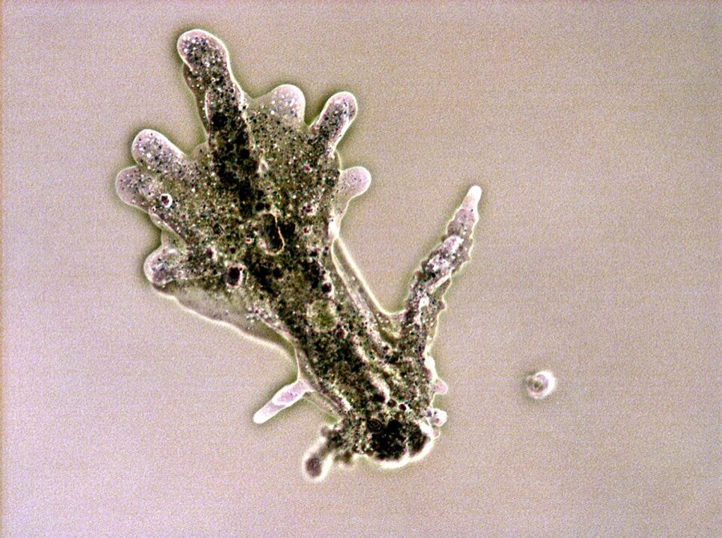
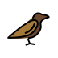
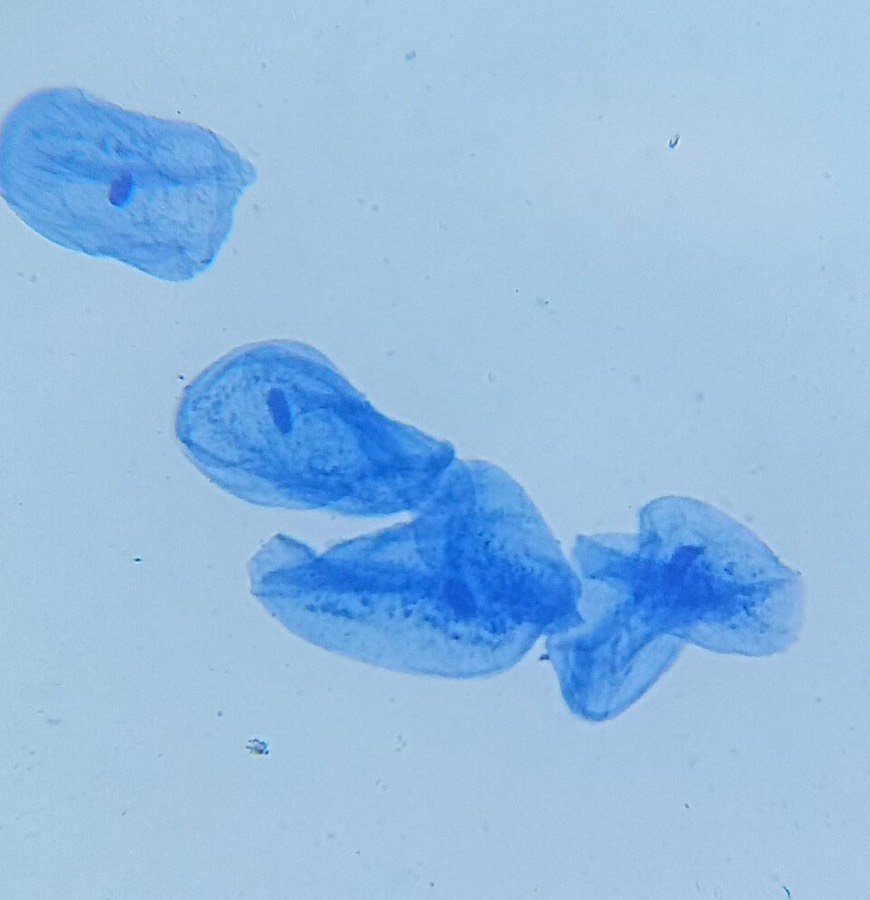
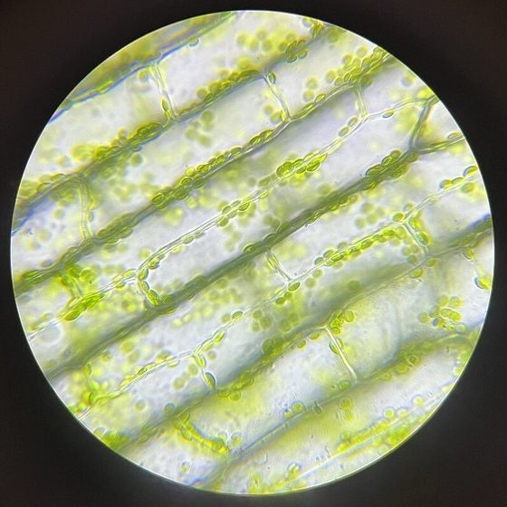
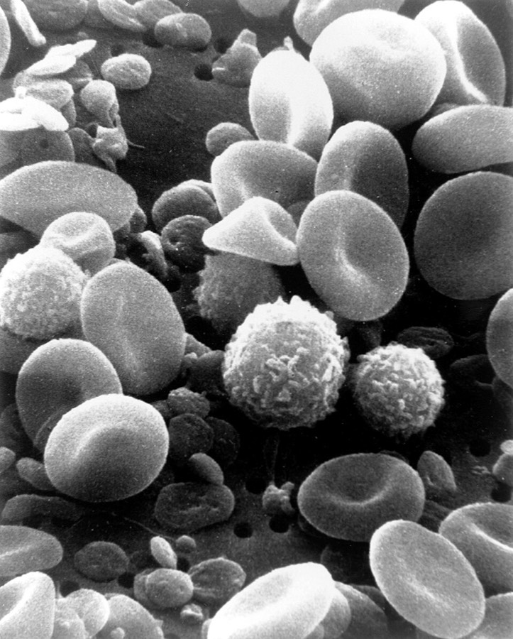
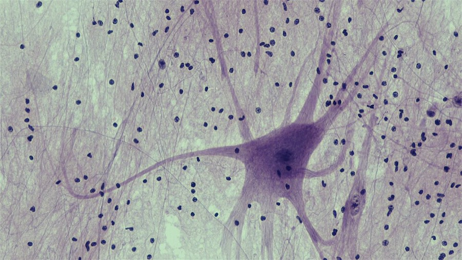

البيولوجيا ببساطة
كل مواد الامتحان، موضوع موضوع: بنفهم كل إشي بالصور والحركة، وبعدين بنحلّ أسئلة المراجعة سوا.
الشرح
١٠ مواضيع١مميزات الحياة
كيف بنعرف إنه إشي حيّ؟ الكائن الحي بيعمل أشياء الجماد ما بيعملها. هدول اسمهم مميزات الحياة.
الحركة
بيتحرّك

التنفّس
بيتنفّس
التكاثر
بيجيب صغار من نوعه

التغذية
بياكل أو بيصنع أكله

النمو
بيكبر
الإفراز
بيطلّع الفضلات من جسمه

الإحساس
بيحسّ باللي حواليه وبيردّ عليه
٢شروط البقاء (احتياجات البقاء)
عشان الكائن الحي يضلّ عايش، لازم يلاقي ببيئته:
 ماءغذاء
ماءغذاء أكسجين (هوا)
أكسجين (هوا)
درجة حرارة ملائمة ضوء
ضوءالضوء والتربة مهمّين خصوصًا للنباتات.
جرّب لحالك: مميزة حياة ولا شرط بقاء؟
٣التدريج البيولوجي (مستويات التنظيم بالطبيعة)
وإله اسم تاني: التسلسل الهرمي.
كل إشي حيّ مبني من أجزاء صغيرة، والأجزاء الصغيرة بتتجمّع وبتعمل إشي أكبر. من الأصغر للأكبر:
- ١ذرّةأصغر وحدة بالمادةمثال: وحدة واحدة من مادة المغنيزيوم
- ٢جزيءكم ذرّة مربوطين مع بعضمثال: الماء
- ٣عضيّةجزء صغير جوّا الخلية، إله شغلةمثال: النواة
- ٤خليةأصغر وحدة حيّةمثال: خلية بشرة
- ٥نسيجخلايا متشابهة بتشتغل مع بعضمثال: نسيج جلدي
- ٦

عضوكم نسيج مع بعض بيعملوا شغلةمثال: المعدة - ٧جهازكم عضو بيشتغلوا مع بعضمثال: الأنف + القصبة الهوائية + الرئتين
- ٨كائن حيكل الأجهزة مع بعضمثال: فيل
الأسماء مخبّاية وقت اللعبة. سكّر اللعبة لترجع تشوفها.
جرّب لحالك: رتّبهم من الأصغر للأكبر
٤وحيد الخلية ومتعدّد الخلايا
وحيد الخلية
كل جسمه خلية وحدة بس، وهي بتعمل كل إشي لحالها. صغير كتير وبيعيش ببيئة رطبة. أمثلة: أميبا، بكتيريا.
متعدّد الخلايا
 إنسان
إنسانجسمه مبني من ملايين الخلايا، وفيه أنسجة وأعضاء وأجهزة. أمثلة: فيل، إنسان.

٥فقاري ولافقاري
الفقاريات
- يوجد لديها عظام في داخل أجسامها تكوّن هيكلًا داخليًّا.
- الهيكل ينمو ويكبر مع تقدّم الحيوان.
- تملك عمودًا فقريًّا في وسط جسمها.
- يجري الدم في جهاز نقل مغلق.
- وهنالك ٥ طوائف: الأسماك، البرمائيات، الزواحف، الطيور، الثدييات.
 الأسماك
الأسماك البرمائيات
البرمائيات الزواحف
الزواحف
الطيور الثدييات
الثديياتاللافقاريات
- لا يوجد لديها عظام في داخل أجسامها.
- وهنالك طائفتان: الحشرات، الرخويات.
 الحشرات
الحشرات الرخويات
الرخوياتيعني السؤال دايمًا: عنده عظام وعمود فقري جوّا جسمه؟ آه = فقاري. لأ = لافقاري.
٦الخلية الحيوانية وعضيّاتها
الخلية هي أصغر وحدة حيّة. جوّاها أجزاء صغيرة اسمها عضيّات، وكل عضيّة إلها شغلة. اكبس على أي جزء بالرسمة:
- (= الغشاء الخلوي) بيحيط بالخلية. شبه نفّاذ: اختياري، بيدخّل وبيطلّع بعض المواد بس.
- سائل بيشبه الجلي، بيعبّي الخلية والعضيّات سابحة فيه.
- فيها DNA (الصفات الوراثية)، ومسؤولة عن انقسام الخلية.
- محطة القوة بالخلية.

٧الخلية النباتية وعضيّاتها
فيها كل اللي بالحيوانية، وزيادة عليهم ٣ أشياء: جدار الخلية، فجوة عصارية، بلاستيدات خضراء.
- بيحمي وبيدعم الخلية.
- (= الغشاء الخلوي) بيحيط بالخلية. شبه نفّاذ: اختياري، بيدخّل وبيطلّع بعض المواد بس.
- سائل بيشبه الجلي، بيعبّي الخلية والعضيّات سابحة فيه.
- فيها DNA (الصفات الوراثية)، ومسؤولة عن انقسام الخلية.
- بتخزّن المي والمواد.
- فيها كلوروفيل، وبتقوم بـالتمثيل الضوئي.
- محطة القوة بالخلية.
| العضيّة | حيوانية | نباتية |
|---|---|---|
| غشاء الخلية | ||
| سيتوبلازم | ||
| نواة | ||
| ميتوكوندريا | ||
| جدار الخلية | ||
| فجوة عصارية | ||
| بلاستيدات خضراء |

٨الانتشار
- من وين لوين؟ من المحل اللي فيه من المادة كتير (تركيز عالي) للمحل اللي فيه منها شوي (تركيز منخفض).
- ليش؟ لأنه الجزيئات بتتحرّك حركة عشوائية بكل الاتجاهات وبتتصادم ببعض.
- بدها طاقة؟ لأ، بتصير لحالها.
مثال من الكتاب: عصير التوت والماء. بعد وقت معيّن بيتجانسوا، ولون السائل بيصير أحمر ومتجانس.
٩أنواع الخلايا بالجسم
مش كل الخلايا نفس الشكل. كل خلية شكلها بيلائم شغلتها.
لعبة: مين أنا؟ شوف صورة الخلية (نفس صورة الكتاب) واختار اسمها. إذا عرفت، الكرت بينقلب والخلية بتحكيلك عن حالها.


١٠قطعة بحث علمي
بالامتحان بيعطوك قصة قصيرة عن تجربة، وبيسألوك عنها. ما تخاف: بكل تجربة دوّر على ٣ أشياء.
العامل المؤثّر
الإشي اللي الباحث غيّره بإيده بين الحالتين.
العامل المتأثّر
الإشي اللي تغيّر بسببه، وهو اللي بنقيسه.
العوامل الثابتة
كل الأشياء التانية اللي لازم تضلّ نفسها بالحالتين، عشان التجربة تكون عادلة.
 مثال: حطّينا نبتة بالضو ونبتة بالعتمة، وبعد أسبوع قسنا طول كل وحدة. المؤثّر: الضوء. المتأثّر: طول النبتة. الثابتة: نفس نوع النبتة، نفس كمية المي، نفس التربة.
مثال: حطّينا نبتة بالضو ونبتة بالعتمة، وبعد أسبوع قسنا طول كل وحدة. المؤثّر: الضوء. المتأثّر: طول النبتة. الثابتة: نفس نوع النبتة، نفس كمية المي، نفس التربة.
- شو الإشي اللي كان مختلف بين الحالتين؟ ← العامل المؤثّر.
- شو قاسوا؟ ← العامل المتأثّر.
- شو كان نفس الإشي بالحالتين؟ ← العوامل الثابتة.
يلّا نحلّ
أسئلة المراجعة، ورقة عضيّات الخلية، وقطعتين بحث- اسحب الجواب من «بنك الأجوبة» وحطّه بالفراغ. (أو اكبس على الجواب، وبعدين اكبس على الفراغ.)
- بدّك تشيل جواب؟ اكبس عليه وهو بالفراغ.
- أسئلة التصنيف: اسحب كل كرت للسلّة الصح (أو اكبس عليه، وبعدين على اسم السلّة). بدّك ترجّعه؟ اكبس عليه وهو بالسلّة.
- أسئلة «اختار»: اكبس على الأجوبة اللي بدّك إياها، وتحتها بتشوف قدّيش اخترت.
- اكبس فحص لتعرف إذا صح، والحل إذا علقت. مع كل حل في شرح، وكمان شو تكتب على الورقة.
أسئلة المراجعة
٩ أسئلة من الدفتر
ورقة عضيّات الخلية
سمِّ الأجزاء اللي الأسهم بتأشّر عليها
قطعة بحث علمي ١: انتشار العطر
من امتحان وزارة المعارف في العلوم والتكنولوجيا للصف السابع
قطعة بحث علمي ٢: نبض القلب والتنفّس
كمان من نفس امتحان الوزارة للصف السابع
 بطل! حلّيت كل الأسئلة
بطل! حلّيت كل الأسئلة